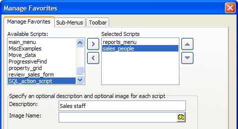
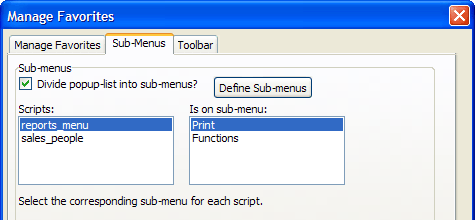
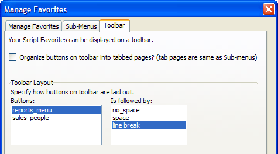

Manage Favorites Dialog Box
Selecting Scripts > Manage Favorites displays the Manage Favorites dialog box. This utility lets you add and remove scripts from your Favorites list (which appears under the Scripts menu), as well as specify different toolbar layout options. The Favorites list of scripts appears when you run the Display Script Favorites Pick-List action.
Procedure
Select scripts from the Available Scripts list and click
 to add and to remove them from the Selected Scripts list.
to add and to remove them from the Selected Scripts list.Click
 and
and  to reposition scripts in the Selected
Scripts list.
to reposition scripts in the Selected
Scripts list.Optionally, select a script in the Selected Scripts list and enter a description in the Description field.
Optionally, select a script in the Selected Scripts list and click to display the <span class=Screen>Insert Image Dialog Box</span> to associate an image with the script.

Click the Sub-Menus tab.
Optionally check the Divide pop-up list into sub menus? check box. The structure you define here applies to both menu and toolbar displays.
If you checked the Divide pop-up list into sub menus? check box, click the Define Sub-menus button to name sub menus.
For each item in the Scripts list, select a entry in the Is on sub-menu list.

Click the Toolbar tab.
Optionally check the Organize buttons on toolbar into tabbed pages? check box. The structure of the tabbed pages is the same as Defined on the Sub-Menus tab.
Optionally, specify how buttons on the toolbar are laid out. For each item in the Buttons list, select an item in the Is followed by list.

Click OK to continue or Cancel to discard your changes.